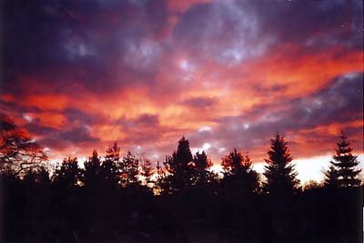

So, die 12 Monate waren vorbei, aber man merkte erst beim Packen, dass es sich um einen Abschied handeln würde. Man reflektierte ein bisschen die ganzen Sachen, die man so durchgemacht hatte. Ende Juli war der Flug gebucht, man unternahm mit den Kindern seine letzten Spaziergänge rund um Murtle Estate und empfand schon ein bisschen vorweggenommene Wehmut, die Kinder, die man näher kannte, verhielten sich auch etwas traurig. Dieses harte Schicksal mussten sie aber jedes Jahr mitmachen. Sehr viele junge Co-Worker, an die sie sich gewöhnt haben, verließen das Land und neue Leute mussten sich in die Kinder “einarbeiten”. Für den Entwicklungsprozess also nicht sehr förderlich.

Der letzte Tag war relativ unspektakulär, man hatte einfach zu viel zu tun mit Packen, Organisieren etc. als dass man sich mit wehmutigen Abschiedsgedanken beschäftigen konnte. Der Rückflug ging wieder über London und beim Warten auf den Berlin-Flug geschah etwas ganz eigenartiges. Leute sprachen Deutsch, hatte das ganze Jahr auch mit den Deutschen in Camphill immer nur Englisch gesprochen, deswegen kam mir die Sache echt nicht geheuer vor. Jetzt weiss ich, wie Deutsch für Ausländer klingt (“Klaus, du kommst jetzt sofort her!!”). Teilweise ziemlich oberlehrerhaft und überkorrekt. Naja, lag vielleicht auch daran, dass das eine totale überdrehte Familie war, deren Eltern im Reisestress waren und ihre Kinder nicht wirklich im Griff hatten. Als wir über Berlin flogen, kam richtige Freude auf. Das viele Grün, die Großstadt. Jetzt erinnerte ich mich wieder wie toll Berlin doch ist/war, wollte bei der Landung am liebsten in Papstmanier den Berliner Boden küssen! Aus dem Flugzeug gekommen erstmal der Hammer 15 Grad wärmer als in Aberdeen und die Sonne knallte, wie ich es mag. Meine lieben Eltern holten mich dann auch am Terminal ab und wir fuhren nach Hause. Die Eindrücke sehr intensiv, obwohl sich eigentlich nichts verändert hatte. Ziemlich beeindruckend war auch, wie hoch die Wände doch in Berliner Altbau-Wohnungen sind, an kam sich echt vor wie in einem Palast.
Es wurde dann langsam Abend, Fernseher und Tagesschau eingeschaltet. Nach 5 Minuten ein Resumee: Die Nachrichten und Alltags-Politik Meldungen waren von der Thematik exakt die gleichen (langweiligen) wie vor einem Jahr, als wäre man gar nicht weg gewesen. Manchmal denk ich echt, dass Nachrichten nur da sind, um unsere 20:00 Routine auszufüllen. Nicht, dass man völlig unpolitisiert oder uninformiert sein sollte, aber Nachrichten-Abstand bringt wirklich viel mehr. Falls Glotze sein muss, lieber von der Tagespolitik abschalten, Auslandreportagen, ein paar Dokus/Tierfilme (+Fussballspiel/Simpsons) schauen und die Tagesnachrichten lieber schriftlich oder per Radio zur Kenntnis nehmen, man lebt auch gesünder und schimpft nicht ständig rum. Nach der Tagesschau lief dann ein synchronisierter englischer Film und zum ersten Mal hab ich wirklich bewusst wahrgenommen: irgendwie haut das mit Lippenbewegungen und der deutschen Sprache überhaupt nicht hin….